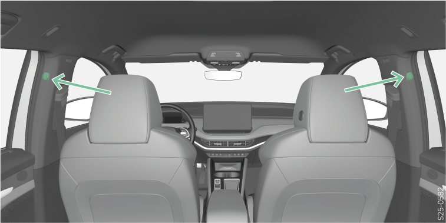

<!-- topicId: e2b7a82baa1cd7d3eeb72f40be03b3d5_2_fr_FR | type: topic -->
<h1>Vue d’ensemble</h1>
<html data-dyxml-version="2"><div lang="fr-FR"><div class="topic-content"><section data-type="topic-allgemein" data-dl-contains="block" id="ID_4a682eb794f23d6cac144525062bb107-2825c0c301badb3fac14452545e4cda9-fr-FR"><p id="ID_3d7f6cf894f23d6cac1445251af703ba-2825c0c301badb3fac14452545e4cda9-fr-FR"></p><div data-role="block" data-type="block" id="ID_886d19d8bdc42755ac1445251e21e318-2825c0c301badb3fac14452545e4cda9-fr-FR" hasIllu="true"><div data-type="illu" id="ID_8536823b7bdf11efb88c8f8c3782c3e3-2825c0c301badb3fac14452545e4cda9-fr-FR"><div data-class="vw-layout-half_column" data-dl-wrapper="figure" id="d2293271e34"><figure id="ID_408d846db635e07bac1445255fedfb10-2825c0c301badb3fac14452545e4cda9-fr-FR" data-role="" data-type="" data-position=""><div><a data-fancybox="group" media-link="" class="fancybox" data-href="../media/img0dcb3b32a0cf5515ac1445251d9ce94a_2_--_--_PNG_3x.png" data-options="{&#34;buttons&#34;:[&#34;fullScreen&#34;, &#34;thumbs&#34;, &#34;close&#34;],&#34;hash&#34;:false}"></img></a></div></figure></div></div><p data-type="p" id="ID_15afa8d8518e11e9be2cb59f315bdda1-2825c0c301badb3fac14452545e4cda9-fr-FR">La charge maximale du crochet est de 2 kg.</p></div><div></div></section></div></div></html>